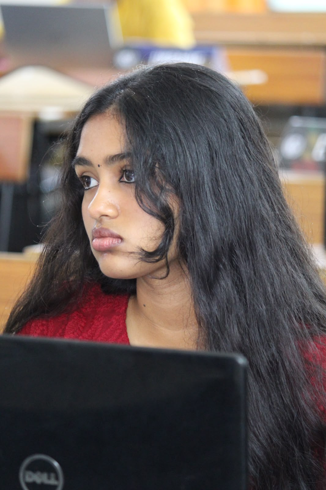
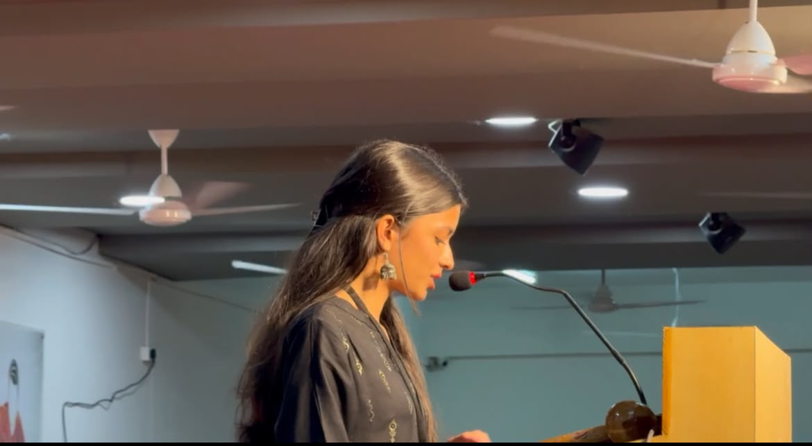

About the Committee
The UNCSW is the principal global body dedicated to promoting gender equality and women empowerment. Elected by ECOSOC, it focuses on advancing women’s rights, addressing global challenges like discrimination and promoting equal participation in social, economical and political life. The body plays a key role in shaping global standards for gender equality
Agenda
Analysing cultural relativism in the context of gender based rights with special emphasis on afghanistan.
Executive Board

Chair Person: Sruthakeerthi Syamala
Sruthakeerthi is a Grade 12 science student at P. Obul Reddy Public School and a TEDx speaker. Though she studies science, her interests span conversations around people and policy — a passion that found its space in Model UN and debate. But over days spent on late-night research, analysing policies and their impact, structuring arguments,she was left with a nagging question: what is the point of policy on paper if it does not serve the people in practice? Which led to a project close to her heart: CivicLight, a student-led NPO democratising access to legal literacy. She values creating spaces that are empathetic, engaging, and real. With three years of experience on the circuit, multiple awards, and prior service as part of the Executive Board, she looks forward to contributing as the Chair for UNCSW at DPSH MUN 2026.

Vice Chairperson: Rujula Yanamandra
Rujula is a first-year student at King’s College London. She is pursing her LLB with the aim of becoming a lawyer. With a particular interest in matters of politics, she enjoys debating controversial topics and playing the devil’s advocate. She looks forward to interacting with the delegates and making the conference a wonderful experience
Background Guide
Download the official background guide for this committee: UNSC Background Guide (PDF)